A
Con la mano cerrada, se muestran las uñas y se estira el dedo pulgar hacia un lado. La palma mira al frente.
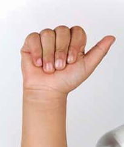B
Los dedos índice, medio, anular y meñique se estiran bien unidos y el pulgar se dobla hacia la palma, la cual mira al frente.
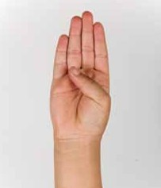C
Los dedos índice, medio, anular y meñique se mantienen bien unidos y en posición cóncava; el pulgar también se pone en esa posición. La palma mira a un lado.
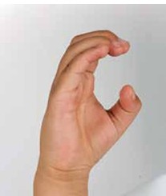D
Los dedos medio, anular, meñique y pulgar se unen por las puntas y el dedo índice se estira. La palma mira al frente.
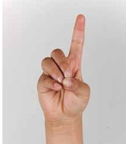E
Se doblan los dedos completamente, y se muestran las uñas. La palma mira al frente.
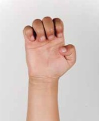F
Con la mano abierta y los dedos bien unidos, se dobla el índice hasta que su parte lateral toque la yema del pulgar. La palma mira a un lado.
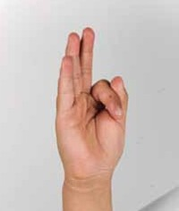G
Con la mano extendida, el dedo índice se estira hacia un lado y el resto de los dedos se mantienen cerrados. La palma mira hacia abajo.
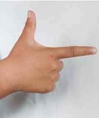H
Los dedos índice y medio se estiran juntos hacia el frente. Los demás dedos están doblados. La palma mira hacia abajo y se mueve ligeramente.
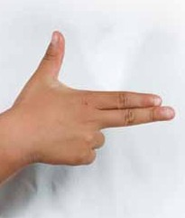I
Solo se estira el dedo meñique hacia arriba, con el resto de los dedos cerrados. La palma mira al frente.
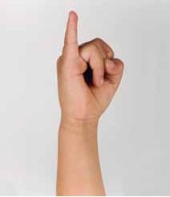J
Se parte desde la posición de la letra “I” y se traza una curva en el aire hacia abajo, como dibujando una "J" con el meñique.
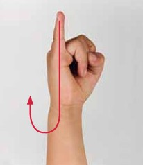K
Se cierra la mano con los dedos índice, medio y pulgar estirados. La yema del pulgar se coloca entre el índice y el medio. Se mueve la muñeca hacia arriba.
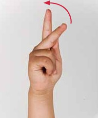L
Con la mano cerrada y los dedos índice y pulgar estirados, se forma una L. La palma mira al frente.
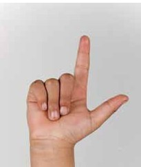M
Con la mano cerrada, se ponen los dedos índice, medio y anular sobre el pulgar.
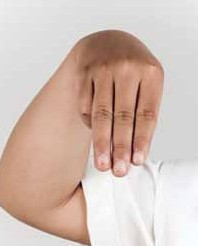N
Con la mano cerrada, se ponen los dedos índice y medio sobre el pulgar.
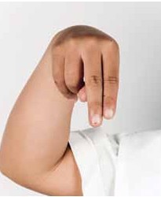Ñ
Con la mano cerrada, se ponen los dedos índice y medio sobre el pulgar. Se mueve la muñeca a los lados.

O
Con la mano se forma una letra O. Todos los dedos se tocan por las puntas.
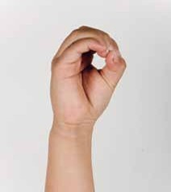P
Con la mano cerrada y los dedos índice, medio y pulgar estirados, se pone la yema del pulgar entre el índice y el medio.
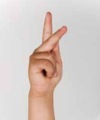Q
Con la mano cerrada, se ponen los dedos índice y pulgar en posición de garra. La palma mira hacia abajo y se mueve la muñeca hacia los lados.
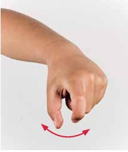R
Con la mano cerrada, se estiran y entrelazan los dedos índice y medio. La palma mira al frente.
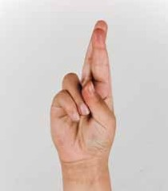S
Con la mano cerrada, se pone el pulgar sobre los otros dedos. La palma mira al frente.
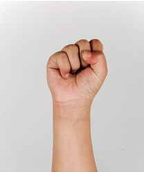T
Con la mano cerrada, el pulgar se pone entre el índice y el medio. La palma mira al frente.
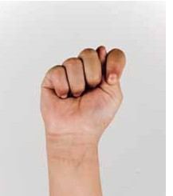U
Con la mano cerrada, se estiran los dedos índice y medio unidos. La palma mira al frente.
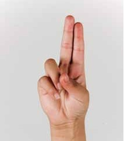V
Con la mano cerrada, se estiran los dedos índice y medio separados. La palma mira al frente.
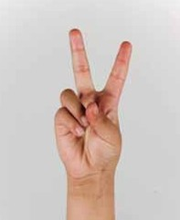W
Con la mano cerrada, se estiran los dedos índice, medio y anular separados. La palma mira al frente.
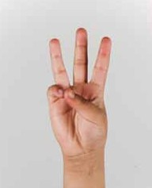X
Con la mano cerrada, el índice y el pulgar en posición de garra y la palma dirigida a un lado, se realiza un movimiento al frente y de regreso.
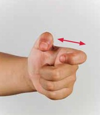Y
Con la mano cerrada, se estira el meñique y el pulgar. La palma mira hacia usted.
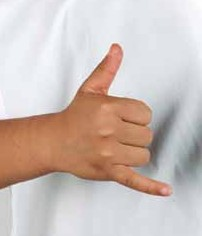Z
Con la mano cerrada, el dedo índice estirado y la palma al frente, se dibuja una letra Z en el aire.
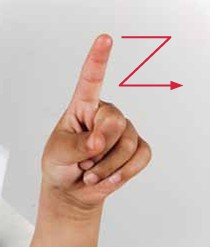